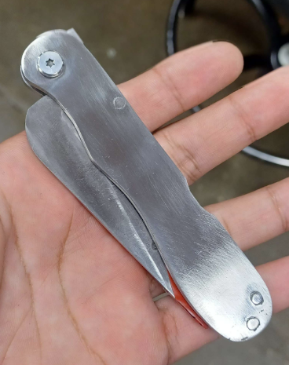

Additional Projects
Technical reports available upon request.
Tiny House Energy Model
MATLAB/Simulink simulation comparing insulation strategies and energy usage.
Candy Crusher
https://mail.google.com/mail/u/0/#inboxFinal CAD design project focused on a hand-powered candy-crushing mechanism. The system uses a gravity fed funnel to meter candies into meshing crushing teeth driven by a crank with a 2:1 gear reduction. Crushed material is guided through an internal hopper and dispensed into a collection cup. All components were designed for and fabricated using 3D printing, with an emphasis on controlled feeding, consistent crushing, and manufacturability.

Knife Design
Designed and fabricated a back-lock folding pocket knife from MagnaCut steel, including custom heat treatment and plate quenching. Achieved a final hardness of approximately 64 HRC, balancing edge retention and toughness for everyday carry use.
3D Printed Dog-Bone Testing
Tensile testing of 3D-printed dog-bone specimens to evaluate the effects of print orientation, infill percentage, wall count, and material selection (PLA, PLA+, ABS, PC, PETG-CF). Results showed that flat (0°) prints with high wall count and 100% infill achieved the highest yield strength, with PLA+ outperforming the other materials tested.